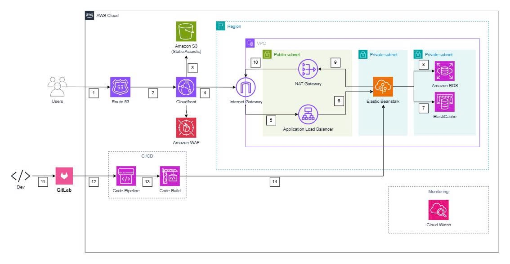

This proposal presents an end-to-end solution for “Digital Transformation for Mini-market on the AWS Cloud.” Traditional mini-markets are currently facing three major challenges: (1) Manual inventory management (using Excel/notebooks) leading to revenue loss and resource waste; (2) 100% reliance on offline sales, missing the fast-growing e-commerce market and losing competitiveness; and (3) Slow operational processes (such as manual price lookup), resulting in poor customer experience.
The proposed solution is to build a comprehensive e-commerce and operational management platform. For software architecture, the team will use a .NET 3-layer architecture (ASP.NET Core MVC, EF Core) combined with the Repository Pattern and Unit of Work Pattern. For infrastructure architecture, the system is designed following the AWS Well-Architected Framework, running on AWS Elastic Beanstalk (for the .NET backend), Amazon RDS for SQL Server (for the database), and Amazon S3 (for static assets). The system is performance-optimized using CloudFront and ElastiCache, and secured using WAF, VPC, and NAT Gateway. The deployment process is fully automated using a CI/CD pipeline integrated with GitHub.
The business benefits are immediate, including automated inventory management (reducing losses) and opening a new online revenue channel. In terms of investment, infrastructure cost in the first 12 months is nearly zero thanks to AWS Free Tier (e.g., RDS Express Edition, EC2 t3.micro). The long-term operational cost (after Free Tier) is also very reasonable, estimated at only 138.06 USD/month for the entire system. With minimal initial investment and the ability to directly address revenue leakage issues, the ROI is very high and nearly instantaneous.
The project is proposed to be implemented within 11 weeks, divided into four main phases: (1) Foundation & Architecture, (2) Core Feature Development, (3) AWS Integration & CI/CD, and (4) Finalization & Deployment. Expected outcomes are measured using specific success metrics: reducing inventory errors by 90%, reducing checkout time by 50%, and achieving 20% online revenue within the first 6 months. This solution not only addresses immediate problems but also provides a scalable platform for future data-driven decision-making.
Current Situation
Small and medium retail businesses, especially traditional mini-market models in Vietnam, are operating based on outdated manual processes. As the market becomes increasingly digital, the lack of technology adoption has created multiple issues that directly impact their ability to survive and grow.
Key Problems
Manual inventory management leads to inaccurate data and resource waste:
Most mini-markets currently manage thousands of SKUs using notebooks or Excel files. Stock-in/out and end-of-day inventory checks rely entirely on manual counting and data entry. This easily leads to data errors due to frequent mistakes in product codes or quantities, causing large discrepancies between “recorded” and “actual” stock. Manual checking also requires significant labor, as employees spend hours daily counting, reconciling, and correcting reports instead of focusing on sales or customer service. Ultimately, this results in financial losses, as inaccurate data prevents owners from monitoring expired goods, damaged items, or theft, typically causing 5–10% inventory loss monthly.
Dependence on offline sales, missing the E-commerce market:
Most mini-markets in Vietnam depend heavily on walk-in customers. They are limited by geography (serving only nearby areas) and a small group of familiar customers. Operating offline only means missing out on the growing e-commerce customer base, especially younger generations used to online shopping. They cannot compete with the convenience of 24/7 ordering or home delivery offered by major convenience store chains like Circle K or 7-Eleven and delivery apps like Grab or Shopee, resulting in customer loss over time.
Operational inefficiency and poor customer experience:
Checkout and information lookup processes in traditional mini-markets are usually very slow. When customers ask for product prices, details, or promotions, employees (especially new ones) must search manually, wasting time. Making customers wait long causes frustration and appears unprofessional. Employees spend too much time on simple, error-prone tasks (e.g., misreading handwritten prices), reducing the number of customers served during peak hours.
The architecture is designed to address the problems above by combining a .NET 3-tier software architecture with AWS managed cloud services. This architecture follows the principles of the AWS Well-Architected Framework, ensuring security, high performance, fault tolerance, and cost optimization.

AWS Services Used
AWS Elastic Beanstalk: A Platform as a Service (PaaS) chosen to deploy the .NET 3-tier application (including the WebShop Presentation Layer and Application Services Layer). Beanstalk automates 100% of infrastructure management, including automatically creating an Auto Scaling Group (ASG) to ensure scalability and cost efficiency.
Amazon RDS (SQL Server): A Managed Relational Database Service that hosts the Persistence Layer. SQL Server is chosen because the .NET application has been developed and optimized for SQL Server. Using RDS for SQL Server allows migrating the application to AWS without modifying the Data Layer code. RDS automates daily backups, patching, and failover. For security, RDS is placed in a Private Subnet, preventing direct Internet access and allowing only the Beanstalk application to connect. For cost optimization, SQL Server Express Edition on RDS (Free Tier eligible) is used during the early phase.
Amazon S3: Object storage used for static assets such as product images, CSS files, and JavaScript files. S3 provides extremely low cost and unlimited scalability.
Amazon CloudFront: A Content Delivery Network (CDN). CloudFront caches static files from S3 at global edge locations, significantly improving page load speed and reducing load on Beanstalk, allowing the .NET application to focus on business logic.
Amazon WAF & Route 53: WAF (Web Application Firewall) is integrated with CloudFront to block common attacks (SQL injection, XSS). Route 53 provides domain and DNS routing.
Amazon ElastiCache (Redis): An in-memory data store. It reduces load on RDS for repeated queries (e.g., homepage product list). The .NET application will cache hot data in Redis to improve response times. Like RDS, ElastiCache is placed in a Private Subnet for security.
NAT Gateway: Provides secure outgoing Internet access for private resources (such as Elastic Beanstalk), allowing servers to download security patches without being exposed to the Internet.
AWS CodePipeline/CodeBuild: CI/CD services that integrate with GitHub to automate: (1) CodeBuild compiles the .NET code, (2) CodePipeline deploys new versions to Elastic Beanstalk.
Data Flow
Phases of Implementation
The project is divided into 4 main phases over 11 weeks to ensure progress and quality:
Building technical foundation: Focus on setting up the technical foundation, finalizing data models for core entities, establishing the .NET 3-tier solution structure (Domain, Application, Persistence, WebShop), initializing the GitHub repository, and learning AWS services. (Week 1–4)
Developing core features: Complete the Persistence Layer (Repositories, Unit of Work) and Application Layer (Services) for core tasks such as product, user, and order management. Meanwhile, the WebShop Layer (Controllers, Views) will be built for login, cart, checkout flows, and Unit Tests for Services will begin. (Week 5–7)
Integrating AWS services: Integrate Amazon S3 for product images and ElastiCache (Redis) for caching. The team will complete the CI/CD pipeline for automatic deployment to the Staging environment on Elastic Beanstalk and conduct Integration Testing. (Week 8–10)
Finalization and deployment: Configure security services such as CloudFront, WAF, and Route 53. Deploy version 1.0 to Elastic Beanstalk, conduct final UAT, and set up monitoring using CloudWatch. (Week 11)
Technical Requirements
Development Methodology
Agile (Scrum-like) is applied for flexibility and progress assurance, aligned with the four planned phases. All tasks (features, bugs) are tracked via a Kanban board. All new code must be reviewed via GitHub merge requests before merging into the main branch to maintain code quality.
Testing Strategy
Three levels of testing will be executed:
Deployment Plan
A fully automated CI/CD pipeline is used. When code is pushed to GitHub, AWS CodePipeline triggers CodeBuild to compile the project, run Unit Tests, and package a .zip file. If successful, CodePipeline deploys the new version to Staging on Elastic Beanstalk.
The project is planned over 11 weeks, divided into 4 phases:
Phase 1 (Week 1–4): Technical foundation (data models, .NET architecture, GitHub, AWS VPC/Subnets).
Milestone: Architecture & repositories completed.
Phase 2 (Week 5–7): Core features (Products, Orders, Auth, Cart, Checkout, Unit Tests).
Milestone: All core flows working locally.
Phase 3 (Week 8–10): AWS integration (S3, Redis, CI/CD, Staging deployment).
Milestone: Pipeline working, Staging deployment stable.
Phase 4 (Week 11): Security configuration, Production deployment, UAT, CloudWatch monitoring.
Milestone: Version 1.0 live on Production.
View full estimate:
AWS Pricing Calculator
Or download the budget file.
Infrastructure Cost
The AWS Pricing Calculator estimates monthly operational cost at 138.06 USD with 0.00 USD upfront. The cost optimization strategy focuses on maximizing AWS Free Tier and managed services.
Breakdown:
Most core services fall under Free Tier during the first 12 months, reducing real costs significantly (mainly NAT Gateway + WAF remain).
ROI is extremely high because the solution directly reduces inventory loss and opens new revenue channels.
Three types of risks were identified: Technical, Business, and Operational.
Technical: System Overload (Performance Bottleneck)
Business: Low User Adoption
Operational: Data Loss / Breach
Business metrics:
Technical metrics:
Short-term (0–6 months):
Medium-term (6–18 months):
Long-term: